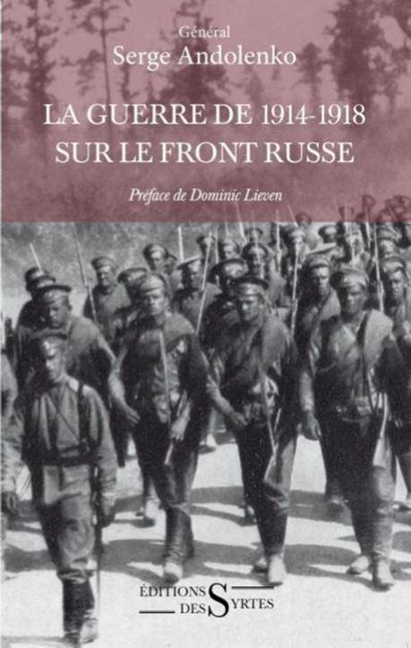
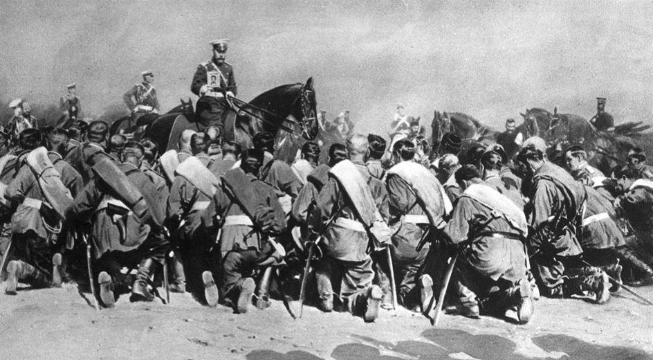
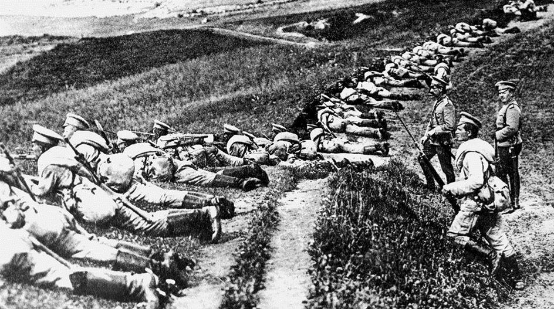
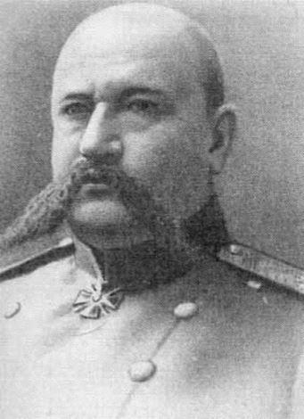

Le rôle oublié de la Russie pendant la Première Guerre mondiale
par Dimitri de KOCHKO
La part de l’armée impériale russe fut déterminante pour la conduite de la première guerre mondiale de 14-18 et pour la victoire de 1918. C'est totalement oublié dans nos manuels.
Car une idée très répandue dans la conscience historique occidentale, veut que la révolution russe d’octobre aurait résulté d’une défaite militaire de l’armée russe et aurait réduit à néant le rôle de cette dernière pour assurer la victoire de novembre 1918.
Selon un général historien français d’origine russe, Serge Andolenko, dont les écrits sur le sujet retrouvent aujourd’hui toute leur actualité, la « désinformation » dont sont victimes nos contemporains à tous les niveaux «conduit, inconsciemment ou non, tous les États complices de cette supercherie, à conserver des données fausses dans leurs mémoires respectives et s’intoxiquer eux-mêmes, jusqu’à ne plus percevoir la réalité des problèmes qui leur seront ultérieurement soumis».
EN 1914, L’OFFENSIVE CONTRE LA PRUSSE SAUVE L’ARMÉE FRANÇAISE SUR LA MARNE
Pour le général Serge Andolenko, l’armée tusse qui s’engage dans la guerre en 1914 est une des meilleures de son temps. Mais elle est « fortement handicapée par deux points faibles inhérents au pays » : sa taille géographique qui aggrave toutes les difficultés d’ordre logistique, particulièrement pour la mobilisation, et son économie, en forte expansion au début du conflit mais pas encore suffisamment consolidée pour pouvoir s’adapter à une conflagration mondiale de longue durée. Ces deux handicaps vont forcer l’armée russe à « remplir sa mission dans des conditions surhumaines » au cours des deux premières années du conflit.
L’année 1914, au cours de laquelle la Russie lance une offensive pour laquelle elle n’est pas prête, le 17 août contre la Prusse orientale, à la demande de la France pour permettre à cette dernière de résister à l’offensive allemande sur la Marne. Ce combat « pour les alliés », comme le qualifie aujourd’hui le réalisateur historien de Saint-Pétersbourg, Viktor Pravdiouk , lui coutera plus de 100.000 morts et une défaite à Tannenberg. Mais les premières victoires ont affolé l’État-Major allemand qui a dégarni le front ouest de deux corps d’armée et d’une division de cavalerie, permettant le « miracle » de la Marne. Ce dernier est loin d’être dû aux seuls taxis célébrés dans nos écoles.
1915 : VERDUN AVANT VERDUN SUR LE FRONT DE L’EST
Andolenko qualifie l’année 1915 de « Verdun avant Verdun » : l’armée russe va subir tout ce que l’industrie allemande est capable de produire. Aux hécatombes de 1914, vont s’ajouter celles encore plus terribles de 1915. L’industrie russe ne suit pas et sur les champs de bataille les soldats russes doivent ramasser les armes de leurs camarades tués des premières lignes. Ils n’arrêtent pas pour autant : les combats ont lieu à la baïonnette, au couteau et même à mains nues…
La Russie perd près de 2.500.000 tués ou blessés (au total la Première guerre lui coutera 2.000.000 de morts, plus que la France saignée à 1.500.000). Les Allemands, conscients qu’ils ne peuvent gagner sur les deux fronts, proposent aux Russes une paix séparée en offrant un cadeau de choix : Constantinople et les détroits !
Les Russes eux-mêmes auraient dû demander l’armistice en toute logique militaire, puisqu’ils n’avaient pas assez d’équipements et d’armes pour combattre et qu’ils compensaient par des pertes humaines. Ils ne le font pas et Nicolas II refuse le cadeau allemand pour ne pas lâcher ses alliés... Et la boucherie continue.
L’ANNÉE CHARNIÈRE : 1916
En 1916, l’Allemagne se retourne sur le front ouest. C’est Verdun puis l’offensive de la Somme. Pour les Russes, c’est un répit relatif qu’ils mettent à profit pour approvisionner et équiper les troupes grâce aux progrès fulgurants de l’industrie. Ils lancent au moins deux offensives décisives pour le sort de la guerre : celle du général Broussilov en juin vers la Bessarabie qui met deux millions de combattants adverses hors de combat, et celle du général Youdénitch qui défait les Turcs sur le front du Caucase et arrive jusqu’à l’Euphrate.
Grâce à ce redressement de l’armée russe, les alliés envisagent la suite du conflit avec plus d’optimisme. Winston Churchill, ministre des munitions à l’époque, relève que « peu d’épisodes de la Grande Guerre sont plus surprenants que la restauration, le ravitaillement et l’effort gigantesque de la Russie en 1916 ».
En début d’année 1917, tous les observateurs et acteurs du conflit (Allemands et alliés) sont d’accord : « la Russie impériale a déjà gagné la guerre ! », estime le général Andolenko. « L’armée russe n’était pas en défaite, au contraire », écrit M. Pavel Andolenko, le fils du général dans des notes sur son père. « D’aucuns qualifient les pertes humaines subies par la Russie en 1915 d’inutiles. C’est pourtant grâce à cette multitude de sacrifices que la Russie doit de ne pas avoir capitulé ou signé une paix séparée. Que ce serait-il passé si la Russie avait été acculée ? Les USA voulaient-ils ou pouvaient-ils intervenir à ce moment ? Les alliés occidentaux auraient-ils pu reconstituer leurs forces et développer leur production d’armements pour aborder 1916 ?», demande à la suite de son père M. Pavel Andolenko.
LA RÉVOLUTION, CAUSE PREMIÈRE DE LA DESTRUCTION DE L’ARMÉE IMPÉRIALE
Depuis janvier 1917, les Autrichiens négocient avec les Français, les Anglais et les Italiens. Mais le Tsar n’est pas au courant. S’il l’avait été, peut-être n’eût-il pas abdiqué en mars. L’abdication aux raisons encore mal élucidées, selon Andolenko, a marqué le début de la fin. Les soldats qui avaient combattu pour la Patrie, Dieu et le Tsar «ne savaient plus où se tourner. » Le Gouvernement provisoire, tout en proclamant sa volonté de poursuivre la guerre, donne des ordres incohérents qui disloquent l’armée de l’intérieur. Pour Andolenko : « la révolution n’est pas une conséquence fortuite du marasme existant, ni d’une prétendue défaite militaire ; la révolution serait plutôt la cause première de la destruction de l’armée ».
Français et Russes ont supporté les 2/3 des pertes en vies humaines du premier conflit mondial. « Les armées française et russe ont payé le plus lourd tribut à la victoire et il faut se souvenir que ces deux armées ont lutté en étroite collaboration tout au long de la guerre, chacune s’efforçant toujours de soulager l’autre quand celle-ci supportait l’effort principal de l’ennemi », conclut après son père Pavel Andolenko. À la fin de la guerre, malgré la paix de Brest-Litovsk et les « emprunts russes », le maréchal Foch déclarait : si la France n’a pas été effacée de la carte de l’Europe, c’est avant tout à la Russie que nous le devons». L’histoire se répétera quelque 27 ans plus tard : les États unis n’interviendront dans le second conflit mondial que 6 mois après la reddition de Von Paulus aux Russes à Stalingrad. Aujourd'hui, une proportion importante de Français croient que ce sont les Américains qui les ont sauvés en 1918 et en 1945. C'est une révision de l'histoire qui aujourd'hui a son importance dans la guerre de l'information contre la Russie.
D. de K.
Source :
http://www.stoprussophobie.info/ que nous remercions pour l’autorisation de publication de cet article.
Partager cette page